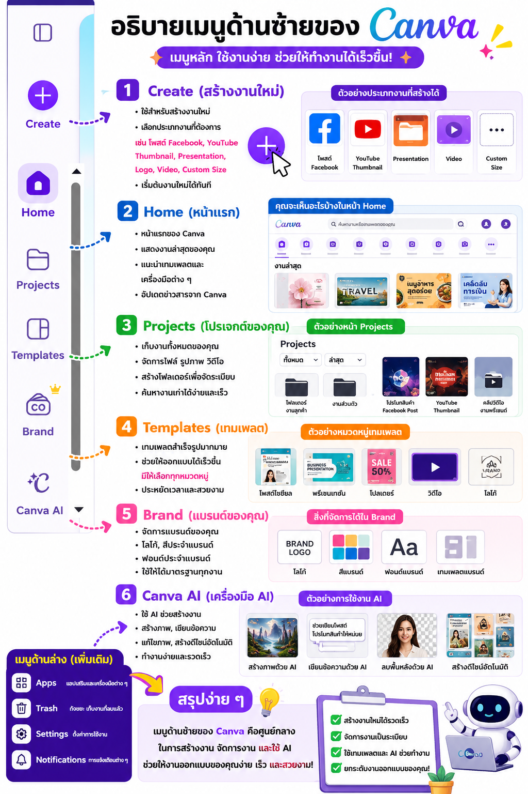
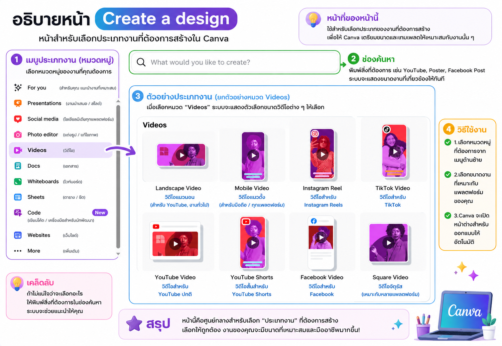
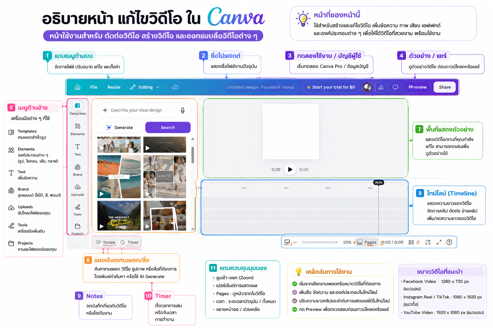
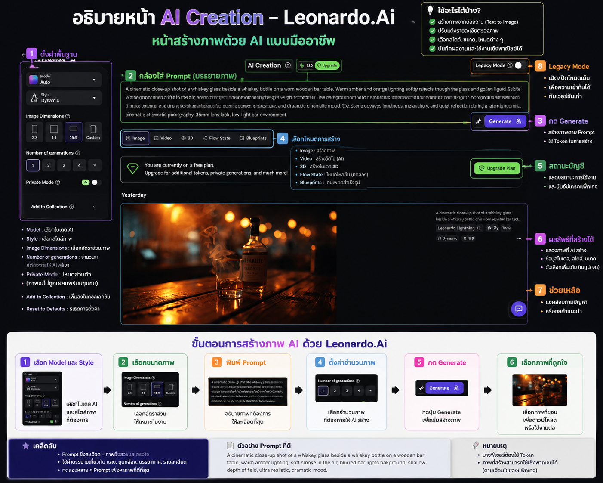

ขั้นตอนการสร้างเพลงด้วย AI
บทที่ 1: ใช้ Gemini แต่งเนื้อเพลงแบบมืออาชีพ
Gemini คือ AI จาก Google ที่สามารถตอบคำถาม ช่วยคิดไอเดีย เขียนข้อความ สรุปเนื้อหา แปลภาษา วิเคราะห์ข้อมูล และอีกมากมาย AI ผู้ช่วยอัจฉริยะที่ช่วยคุณคิด เขียน วิเคราะห์ และสร้างสรรค์ได้ในที่เดียว
ทำความรู้จักหน้าต่าง Gemini (Web)
คู่มือใช้งาน Gemini สำหรับผู้เริ่มต้น (Beginner's Guide)

เริ่มแชทใหม่
แสดงประวัติการสนทนาล่าสุด คลิกเพื่อเปิดดูอีกครั้ง
เลือกโมเดลของ Gemini เช่น 2.5 Flash (เร็ว), 2.5 Pro (ฉลาดละเอียด)
แนะนำคำถามหรือไอเดียที่คุณอาจสนใจ
พิมพ์คำถามหรือสิ่งที่ต้องการให้ Gemini ช่วยได้ที่นี่
- Deep Research: ค้นคว้าเชิงลึก
- Think: คิดวิเคราะห์อย่างเป็นขั้นตอน
- Canvas: สร้าง/แก้ไขงานร่วมกัน
อัปเกรดเพื่อใช้งานความสามารถขั้นสูงและโมเดลที่ทรงพลังขึ้น
- จุด 9 จุด: เข้าถึงแอป Google อื่นๆ เช่น Gmail, Drive
- ถังขยะ: ลบแชทปัจจุบัน
จัดการบัญชี Google และการตั้งค่าบัญชี
วิธีใช้งาน Gemini แบบง่ายๆ ใน 4 ขั้นตอน
- ช่วยสรุปเนื้อหา...
- คิดไอเดียคอนเทนต์...
- Think
- Canvas
- ระบุรายละเอียดให้ชัดเจน
เช่น บทบาท, เป้าหมาย, กลุ่มเป้าหมาย, รูปแบบที่ต้องการ - ใช้คำสั่งทีละเรื่อง
เพื่อให้ Gemini โฟกัสและตอบได้ตรงประเด็น - ขอรายละเอียดเพิ่มเติม
เช่น "อธิบายเพิ่ม", "ยกตัวอย่าง", "สรุปสั้นลง" - ตรวจสอบข้อมูลสำคัญเสมอ
โดยเฉพาะข้อมูลที่เป็นปัจจุบันหรือเชิงตัวเลข
- ช่วยเขียนโพสต์เฟซบุ๊กโปรโมทคาเฟ่ สไตล์มินิมอล ความยาวไม่เกิน 150 คำ
- สรุปไฟล์ PDF นี้ให้หน่อย (อัปโหลดไฟล์)
- วางแผนเที่ยวเชียงใหม่ 3 วัน 2 คืน งบประมาณ 5,000 บาท
- แปลประโยคนี้เป็นภาษาอังกฤษ: "ขอบคุณที่ช่วยเหลือฉัน"
- 💬 ตอบคำถามและให้ความรู้
- 📝 เขียนบทความ อีเมล สคริปต์ โพสต์
- 📊 สรุปและวิเคราะห์ข้อมูล
- 🌍 แปลภาษา
- 💼 ช่วยในการเรียนและการทำงาน
- 💻 เขียนโค้ด และแก้ไขปัญหา
- 💡 สร้างไอเดีย และวางแผนต่างๆ
ใช้ Gemini ร่วมกับ Suno AI เพื่อแต่งเพลง
ขั้นที่ 1: ใช้ Gemini แต่งเนื้อเพลง
บทที่ 2: คู่มือใช้งาน Suno AI แบบละเอียด ตั้งแต่เริ่มต้นจนสร้างเพลงระดับมืออาชีพ
Suno AI คือแพลตฟอร์มสร้างเพลงด้วยปัญญาประดิษฐ์ (AI) ที่สามารถสร้างเพลงพร้อมเสียงร้อง ดนตรี และการเรียบเรียงเพลงได้ภายในเวลาไม่กี่นาที
อธิบายหน้าต่างการใช้งาน (Create Song)
สร้างเพลงด้วย AI ง่ายๆ ไม่กี่ขั้นตอน (Make a songกับ AI in just a few steps.)

เมนูสำหรับนำทางใน Suno AI
- Home, Create, Library, Explore, Search
- จัดการเครดิต, การตั้งค่า, ช่วยเหลือ และอื่นๆ
ช่องสำหรับใส่เนื้อเพลงของคุณ
- พิมพ์เอง หรือวางเนื้อเพลงที่มีอยู่
- กด Generate Lyrics เพื่อให้ AI ช่วยแต่งเนื้อเพลง
อธิบายแนวเพลง สไตล์ อารมณ์ หรือเครื่องดนตรี
- ยิ่งอธิบายละเอียด ผลลัพธ์จะยิ่งตรงใจ
ใส่ชื่อเพลงที่คุณต้องการ
เปิดเพื่อสร้างเพลงบรรเลง ไม่มีเสียงร้อง (เปิด = เพลงบรรเลง / ปิด = มีเสียงร้อง)
เมื่อใส่ข้อมูลครบแล้ว กดปุ่มนี้เพื่อให้ AI สร้างเพลงให้คุณ
แสดงเพลงที่คุณสร้างทั้งหมด
- กด Filters เพื่อกรอง
- เลือกจัดเรียงตาม Newest / Oldest
กดเพื่อฟังตัวอย่างเพลง
กดไลค์ หรือไม่ไลค์เพลงที่คุณชอบ
แชร์เพลงให้คนอื่น หรือคัดลอกลิงก์
ตัวเลือกเพิ่มเติมของเพลงนั้นๆ (เช่น Download, Extend, Cover, Remix)
ดาวน์โหลดเพลงที่สร้าง (ต้องมีเครดิตเพียงพอ)
- เขียนเนื้อเพลง หรือกด Generate Lyrics
- อธิบายสไตล์เพลงที่ต้องการ
- ใส่ชื่อเพลง
- เลือก Instrumental (ถ้าต้องการเพลงบรรเลง)
- กด Create เพื่อสร้างเพลง
- รอประมาณ 20-60 วินาที
- ฟังตัวอย่าง และปรับแต่งใหม่หากต้องการ
- อธิบายสไตล์เพลงให้ละเอียด ผลลัพธ์จะตรงใจมากขึ้น
- ลองใช้คำอารมณ์ (mood) เช่น sad, happy, romantic, chill
- ระบุเครื่องดนตรีหรือแนวเพลง เช่น acoustic guitar, piano, synth
- ถ้าไม่พอใจ กดสร้างใหม่ได้เรื่อยๆ
ฉันยังคงคิดถึงเธอ ไม่เคยเปลี่ยนใจ
แม้วันเวลาจะผ่านไปนานสักเท่าไร
หัวใจฉันยังเป็นของเธอ คนเดียวเท่านั้น
บทที่ 3: สร้างรายได้จากเพลง AI แบบเข้าใจง่าย (เน้น YouTube)
คำตอบคือ "ได้" และแพลตฟอร์มที่ทรงพลังที่สุดในการสร้างรายได้ระยะยาวคือ YouTube เมื่อคุณทำเพลงเสร็จแล้ว คุณสามารถนำเพลงนั้นมาทำภาพประกอบ หรือ MV เพื่ออัปลงช่องและเปิดรับรายได้ตลอด 24 ชม.

รายได้หลักจาก YouTube
- 1 สร้างบัญชี Google
ใช้บัญชี Google ในการสร้างช่อง - 2 สร้างช่อง YouTube
ไปที่ youtube.com คลิก "สร้าง" > "สร้างช่อง" - 3 ตั้งค่าช่อง
- ชื่อช่อง / @ชื่อผู้ใช้
- ภาพโปรไฟล์ / ภาพแบนเนอร์
- คำอธิบายช่อง (เกี่ยวกับช่อง)
- 4 ปรับแต่งช่องให้ครบ
- เพิ่มลิงก์โซเชียล
- เพิ่มปุ่มติดตาม / ปุ่มต่างๆ
- จัดเพลย์ลิสต์
- 1 เลือก "กลุ่มเป้าหมาย" ให้ชัดเจน
- 2 คิดหัวข้อที่คนค้นหา (ใช้ YouTube Search, Google Trends, TubeBuddy)
- 3 ทำวิดีโอให้มีคุณภาพ (เนื้อหามีประโยชน์, ภาพชัด เสียงชัด, ตัดต่อให้น่าสนใจ)
- 4 ตั้งชื่อ (Title) ให้น่าคลิก
- 5 ทำคำอธิบาย (Description) ให้ดี
- 6 ใส่แท็ก (Tag) ให้เกี่ยวข้อง
- 7 ทำภาพปก (Thumbnail) ให้น่าสนใจ
- ✓ มีผู้ติดตาม 1,000 คนขึ้นไป
- และ
- ✓ ยอดดูสาธารณะ 4,000 ชั่วโมง ใน 365 วันที่ผ่านมา
- หรือ
- ✓ ยอดดู Shorts 10,000,000 ครั้ง ใน 90 วันที่ผ่านมา
- ✓ ไม่มีการละเมิดกฎของ YouTube
- 1 เปิดใช้สร้างรายได้ใน YouTube Studio
- 2 เลือกประเภทโฆษณา (Pre-roll, Mid-roll, Display, Overlay)
- 3 เลือกตำแหน่งโฆษณากลางวิดีโอได้
- 4 รายได้จะเข้าบัญชี Google AdSense
รายได้โดยประมาณ
- ทำคอนเทนต์สม่ำเสมอ: อัปโหลดอย่างน้อยสัปดาห์ละ 1-2 คลิป
- เข้าใจ SEO ของ YouTube: ใช้คีย์เวิร์ดในชื่อ คำอธิบาย และแท็ก
- ทำ Thumbnail ให้น่าคลิก: ภาพปกสวย ดึงดูด สื่อถึงเนื้อหา
- ทำให้คนดูจบวิดีโอ: เปิดคลิปให้น่าสนใจ ใช้การเล่าเรื่อง
- สร้างเพลย์ลิสต์: ช่วยให้คนดูต่อเนื่อง เพิ่มเวลาการรับชม
- โปรโมตช่อง: แชร์ในโซเชียล Facebook, TikTok, Blog
- 1 เชื่อมต่อบัญชี AdSense ใน YouTube Studio
- 2 รอรับเงินเมื่อรายได้ถึงเกณฑ์ $100 (ประมาณ 3,500 บาท)
- 3 Google จะโอนเงินเข้าบัญชีทุกวันที่ 21-26 ของเดือน
- 4 ตรวจสอบรายได้ที่เมนู "รายได้" ใน Studio
เครื่องมือที่แนะนำ
จัดการช่อง
ช่วยทำ SEO
วิจัยคีย์เวิร์ด
ทำภาพปก
บทที่ 4: วิธีสร้างรายได้จาก Facebook

รายได้จาก Facebook มีอะไรบ้าง?
- 1 สร้างเพจให้น่าสนใจ
เลือกชื่อที่จดจำง่าย, รูปโปรไฟล์และหน้าปกชัดเจน - 2 กรอกข้อมูลให้ครบถ้วน
หมวดหมู่เพจ, รายละเอียดเพจ, ช่องทางติดต่อ - 3 วางตัวตนของเพจ
กำหนดกลุ่มเป้าหมาย, วางคอนเทนต์ที่ถนัด - 4 โพสต์สม่ำเสมอ
อย่างน้อย 3-5 โพสต์/สัปดาห์
- 1 คอนเทนต์ให้คุณค่า
เช่น ความรู้, เคล็ดลับ, ความบันเทิง - 2 ใช้รูปแบบที่หลากหลาย
ภาพ, วิดีโอ, Reels, ไลฟ์สด - 3 เข้าใจกลุ่มเป้าหมาย
สร้างคอนเทนต์ที่ตอบโจทย์ - 4 โพสต์ในเวลาที่เหมาะสม
เช่น 07.00-09.00 น. / 18.00-21.00 น. - 5 กระตุ้นการมีส่วนร่วม
ถาม-ตอบ, โพล, คอมเมนต์
คนดูเยอะ = โอกาสสร้างรายได้มากขึ้น
- 1 เข้าไปที่ Meta Business Suite
- 2 เลือก "สร้างรายได้"
- 3 เลือก "โฆษณาในสตรีม"
- 4 ตรวจสอบคุณสมบัติให้ผ่าน:
✓ ผู้ติดตามอย่างน้อย 10,000 คน
✓ มีวิดีโอดูอย่างน้อย 600,000 นาที ใน 60 วันที่ผ่านมา
✓ อายุ 18 ปีขึ้นไป - 5 เมื่อผ่านเกณฑ์ ระบบจะเปิดให้สร้างรายได้
- 1 สร้างวิดีโอ Reels ให้คนดูเยอะ
- 2 เข้าเกณฑ์:
✓ ผู้ติดตามอย่างน้อย 5,000 คน
✓ มียอดชม Reels อย่างน้อย 100,000 ครั้ง ใน 30 วันที่ผ่านมา - 3 เปิดสร้างรายได้จาก Reels
- 4 รับเงินจากโฆษณาที่แสดงใน Reels
รายได้โดยประมาณ
โดยเฉลี่ย: 1,000 วิว = 0.5 - 2 บาท
- 1 เลือกสินค้าที่เกี่ยวข้องกับเพจ
- 2 สมัคร Affiliate กับแพลตฟอร์ม (เช่น Shopee, Lazada, TikTok Shop)
- 3 นำลิงก์สินค้า มาแชร์ในเพจ/โพสต์
- 4 เมื่อมีคนคลิกลิงก์และซื้อสินค้า คุณจะได้รับค่าคอมมิชชั่น
- 1 ตั้งร้านค้าบน Facebook (เปิดใช้งาน Facebook Shop)
- 2 โพสต์สินค้าอย่างสม่ำเสมอ
- 3 ใช้ไลฟ์สดขายสินค้า
- 4 บริการดี ส่งไว ลูกค้าประทับใจ ลูกค้ากลับมาซื้อซ้ำ
- 1 สร้างตัวตนและความน่าเชื่อถือ
- 2 ทำคอนเทนต์ให้มีคุณภาพ และมีกลุ่มผู้ติดตามชัดเจน
- 3 แบรนด์จะติดต่อมาเอง หรือคุณนำเสนอแบรนด์ได้
- 4 รับค่าจ้างจากการรีวิว หรือโปรโมตสินค้า
สิ่งที่แบรนด์ดู:
- ✓ กลุ่มเป้าหมายของเพจ
- ✓ ยอดการเข้าถึง (Reach)
- ✓ การมีส่วนร่วม (Engagement)
- ✓ ความน่าเชื่อถือของเพจ
สรุปขั้นตอนความสำเร็จ
บทที่ 5: คู่มือการใช้งาน Canva แบบครบวงจร

- 1 สมัครใช้งาน
เข้าเว็บ canva.com สมัครใช้งานด้วย Google หรือ Facebook ได้ฟรี - 2 เลือกแม่แบบ (Template)
ค้นหาประเภทงานที่ต้องการ หรือคลิก "สร้างดีไซน์" เพื่อเริ่มจากศูนย์ - 3 หน้าต่างทำงาน
พื้นที่ตรงกลางสำหรับออกแบบ และใช้แถบด้านซ้ายเพื่อเพิ่มองค์ประกอบต่างๆ
- 1 เพิ่มองค์ประกอบ
ใส่กราฟิก รูปภาพ ข้อความ วิดีโอ และพื้นหลังให้ชิ้นงาน - 2 ปรับแต่งงานออกแบบ
เปลี่ยนฟอนต์ สี ลากวางจัดองค์ประกอบให้สวยงามตรงใจ - 3 ดาวน์โหลดและแชร์
ส่งออกผลงานเป็น PNG, JPG, PDF หรือ MP4 (สำหรับวิดีโอ)

- 1 เมนูประเภทงาน (หมวดหมู่)
เลือกหมวดหมู่งานที่คุณต้องการ เช่น Videos, Social media, Presentations - 2 ช่องค้นหา
ถ้าไม่แน่ใจให้พิมพ์สิ่งที่ต้องการสร้าง ระบบจะช่วยค้นหาขนาดงานที่ถูกต้องให้ทันที - 3 ตัวอย่างประเภทงาน
ตัวอย่างเช่นหมวด Video จะมีทั้งแบบแนวนอน (YouTube), แนวตั้ง (Reels/TikTok) หรือสี่เหลี่ยมจัตุรัส

- 1 Home (หน้าแรก)
แสดงงานล่าสุดและเทมเพลตแนะนำ - 2 Projects (โปรเจกต์)
เก็บงานทั้งหมด สร้างแฟ้ม จัดระเบียบ - 3 Templates (เทมเพลต)
คลังแบบสำเร็จรูป ประหยัดเวลาออกแบบ - 4 Brand & Canva AI
จัดการโลโก้/สีแบรนด์ และใช้ AI ช่วยทำงาน

- 1 แถบเมนูด้านบน
จัดการไฟล์, ตั้งชื่อโปรเจกต์, และปุ่ม Share สำหรับดาวน์โหลด - 2 เมนูด้านซ้าย (เครื่องมือ)
เพิ่ม Elements (องค์ประกอบ), Text (ข้อความ), และอัปโหลดไฟล์ส่วนตัว - 3 พื้นที่แสดงตัวอย่าง
แสดงผลงานที่กำลังแก้ไข กดเล่นเพื่อดูความเคลื่อนไหวจริงได้ - 4 ไทม์ไลน์ (Timeline)
จัดการความยาววิดีโอ ตัดต่อ ย้ายคลิป และใส่ Transition เปลี่ยนฉาก
- 1 ใช้คีย์ลัด (Shortcuts)
Ctrl+C (คัดลอก), Ctrl+V (วาง), Ctrl+Z (ย้อนกลับ) ช่วยให้ไวขึ้น - 2 เช็คขนาดวิดีโอเสมอ
• YouTube: 1920x1080 px
• TikTok/Reels: 1080x1920 px - 3 ใช้ Notes & Timer
มีฟีเจอร์สำหรับจดบันทึกไอเดีย และตั้งเวลาเพื่อโฟกัสการทำงาน
พร้อมสร้างสรรค์ผลงานของคุณหรือยัง?
บทที่ 6: คลัง Prompt ลับ สร้างเพลงสไตล์ Thai Pop Sad
บทนี้ได้รวบรวม Prompt (คำสั่ง) สำหรับใส่ในช่อง Style of Music ของ Suno AI เน้นแนวเพลงเศร้า อารมณ์ลึกซึ้ง (Thai Pop Sad) ซึ่งเป็นที่นิยมในตลาด คุณสามารถคัดลอกไปใช้งาน หรือปรับแต่งความเร็ว (BPM) และเครื่องดนตรีเพิ่มเติมได้ตามต้องการ
สูตรลับครบถ้วนทุกองค์ประกอบ! ครอบคลุมทั้งเครื่องดนตรี, อารมณ์เพลง, โครงสร้าง, และกำหนด Mix & Master แบบมืออาชีพ
🎧 รวม 20 ไอเดีย Prompt (แบ่งตามลักษณะเสียงร้อง)
- Prompt 1: Original Thai Pop Sad 2026, emotional male vocal, modern pop ballad, intimate piano intro, ambient electric guitar, emotional storytelling, powerful pre-chorus, memorable soaring chorus, atmospheric synth layers, soft drums, warm bass, radio-ready production, 82 BPM, minor key, heartbreaking but hopeful mood, professional mix and master
- Prompt 3: Modern Thai Pop Sad, male vocal, soft piano and strings, atmospheric textures, emotional build-up, catchy emotional hook, contemporary pop arrangement, reflective mood, polished commercial sound, 84 BPM, minor key
- Prompt 4: Original Thai Emotional Pop, expressive male voice, piano-driven ballad, warm acoustic guitar, cinematic strings, emotional tension and release, relatable heartbreak theme, memorable chorus, modern production, 78 BPM
- Prompt 6: Contemporary Thai Pop Ballad, male vocal, atmospheric piano intro, ambient guitar swells, emotional verses, huge cinematic chorus, emotional strings, radio-ready mix, heartfelt and nostalgic mood, 83 BPM
- Prompt 8: Original Thai Sad Pop, male vocal, acoustic guitar intro, emotional piano, atmospheric soundscape, powerful emotional chorus, modern pop arrangement, hopeful ending, 82 BPM
- Prompt 9: Modern Thai Emotional Pop, vulnerable male vocal, piano and ambient pads, heartfelt lyrics, emotional rise and fall, memorable hook, soft percussion, warm bass, cinematic atmosphere, 80 BPM
- Prompt 11: Original Thai Pop Sad, emotional male vocal, atmospheric guitar textures, piano foundation, cinematic strings, emotional tension, powerful chorus, radio-friendly arrangement, 81 BPM
- Prompt 13: Modern Thai Sad Pop, expressive male voice, minimal piano intro, emotional verses, lush synth atmosphere, soaring emotional chorus, heartfelt mood, 83 BPM, minor key
- Prompt 15: Original Thai Pop Sad Ballad, male vocal, intimate acoustic guitar, piano and strings, emotional dynamics, bittersweet mood, heartfelt lyrics, emotional climax, 80 BPM
- Prompt 17: Thai Pop Sad, male vocal, emotional piano ballad, ambient textures, cinematic build-up, vulnerable storytelling, memorable chorus, hopeful emotional resolution, 78 BPM
- Prompt 19: Thai Pop Sad 2026, expressive male vocal, intimate verses, emotional piano, warm bass, cinematic strings, soaring emotional chorus, polished commercial sound, 82 BPM
- Prompt 2: Thai Pop Sad, emotional female vocal, cinematic piano, ambient pads, delicate acoustic guitar, vulnerable verses, emotional chorus, modern radio pop production, heartfelt lyrics about letting go, smooth dynamics, 80 BPM, minor key, emotional climax
- Prompt 7: Thai Pop Sad with modern electronic elements, emotional female vocal, soft synth textures, piano melodies, deep emotional storytelling, intimate verses, explosive chorus, polished commercial production, 86 BPM
- Prompt 10: Thai Pop Sad 2026, emotional female vocal, contemporary piano ballad, dreamy synths, emotional storytelling, intimate delivery, emotional climax, polished streaming-ready production, 84 BPM
- Prompt 12: Thai Pop Ballad, emotional female vocal, soft acoustic guitar, piano accompaniment, ambient effects, relatable heartbreak story, catchy emotional refrain, modern commercial mix, 79 BPM
- Prompt 14: Thai Emotional Pop 2026, female vocal, cinematic piano, warm strings, ambient guitar, emotional storytelling, powerful and memorable chorus, polished radio sound, 82 BPM
- Prompt 16: Contemporary Thai Sad Pop, emotional female vocal, dreamy atmospheric production, soft electronic percussion, piano motifs, emotional hook, commercial-quality mix, 85 BPM
- Prompt 18: Original Thai Emotional Pop, female vocal, piano and acoustic guitar, atmospheric synth pads, heartfelt narrative, emotional chorus, modern mainstream production, 84 BPM
- Prompt 20: Modern Thai Pop Sad, emotional female vocal, atmospheric piano intro, ambient electric guitar, emotional storytelling, memorable hook, dramatic final chorus, professional radio-ready production, 81 BPM, minor key, hopeful ending
- Prompt 5: Thai Pop Sad 2026, emotional duet vocal, dreamy piano, lush synth pads, soft electronic drums, intimate storytelling, bittersweet atmosphere, emotional hook, modern streaming-friendly sound, 85 BPM
บทที่ 7: อธิบายหน้า AI Creation – Leonardo.Ai
เครื่องมือสร้างภาพด้วย AI ระดับมืออาชีพ เพียงแค่พิมพ์คำบรรยาย (Prompt) ก็สามารถแปลงเป็นภาพกราฟิกสุดอลังการได้ สามารถปรับแต่งรายละเอียดได้ลึก และนำภาพไปใช้งานเชิงพาณิชย์ได้!

💡 ใช้อะไรได้บ้าง?
- 1 Model & Style
เลือกโมเดล AI และสไตล์ภาพที่ต้องการ - 2 Image Dimensions
เลือกอัตราส่วนภาพ (เช่น 16:9, 1:1, 2:3) - 3 Number of generations
กำหนดจำนวนภาพที่ต้องการให้ AI สร้างในครั้งเดียว - 4 Private Mode & Add to Collection
เปิดโหมดส่วนตัว และเพิ่มลงในคอลเลกชันของคุณ
- 1 กล่องใส่ Prompt
พิมพ์บรรยายภาพที่ต้องการให้ละเอียดที่สุดที่นี่ - 2 เลือกโหมดการสร้าง
เลือกสร้างแบบ Image, Video, 3D หรือใช้งาน Blueprints - 3 ปุ่ม Generate
กดเพื่อเริ่มสร้างภาพ (จะแสดงจำนวน Token ที่ใช้) - 4 ผลลัพธ์ที่สร้างได้
แสดงภาพที่เสร็จแล้ว พร้อมข้อมูลโมเดล และปุ่มดาวน์โหลด
⭐ เคล็ดลับ & หมายเหตุ
- • Prompt ยิ่งละเอียด = ภาพยิ่งสวยและตรงใจ
- • ใช้คำบรรยายเกี่ยวกับ แสง, มุมกล้อง, บรรยากาศ, และรายละเอียดต่างๆ
- • บางฟีเจอร์ต้องใช้ Token ในการประมวลผล
- • ภาพที่สร้างสามารถใช้เชิงพาณิชย์ได้ (ขึ้นอยู่กับเงื่อนไขของแพ็กเกจ)